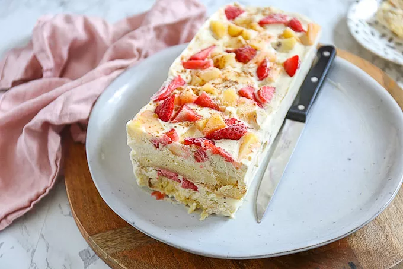

Dol op ijs? Maak dan zeker deze ijstaart met fruit een keer! Super makkelijk om te maken, je moet alleen even geduld hebben.
Ingrediënten
1 liter vanille ijs
aardbeien
kiwi
ananas
cake
kaneel
Bereidingswijze
Haal het vanille ijs uit de diepvries en wacht ongeveer 15 minuten totdat het ijs zacht genoeg is om te kunnen mengen.
Snijd de cake in plakken. Leg een stuk huishoudfolie of bakpapier in een cakevorm. Bedek de bodem van de cakevorm met plakken cake.
Snijd het fruit in stukjes en meng het ijs met het fruit en kaneel in een grote kom. Verdeel ongeveer de helft van het ijs over de plakken cake. Daarna weer een laagje cake en daarna de rest van het ijs.
Zet de ijstaart in de diepvries. Na een nachtje in de diepvries is de ijstaart klaar. Snijd de ijstaart in plakken en serveer met wat slagroom.

Tip Snijd de ijstaart in plakken en serveer met een lekkere toef slagroom.